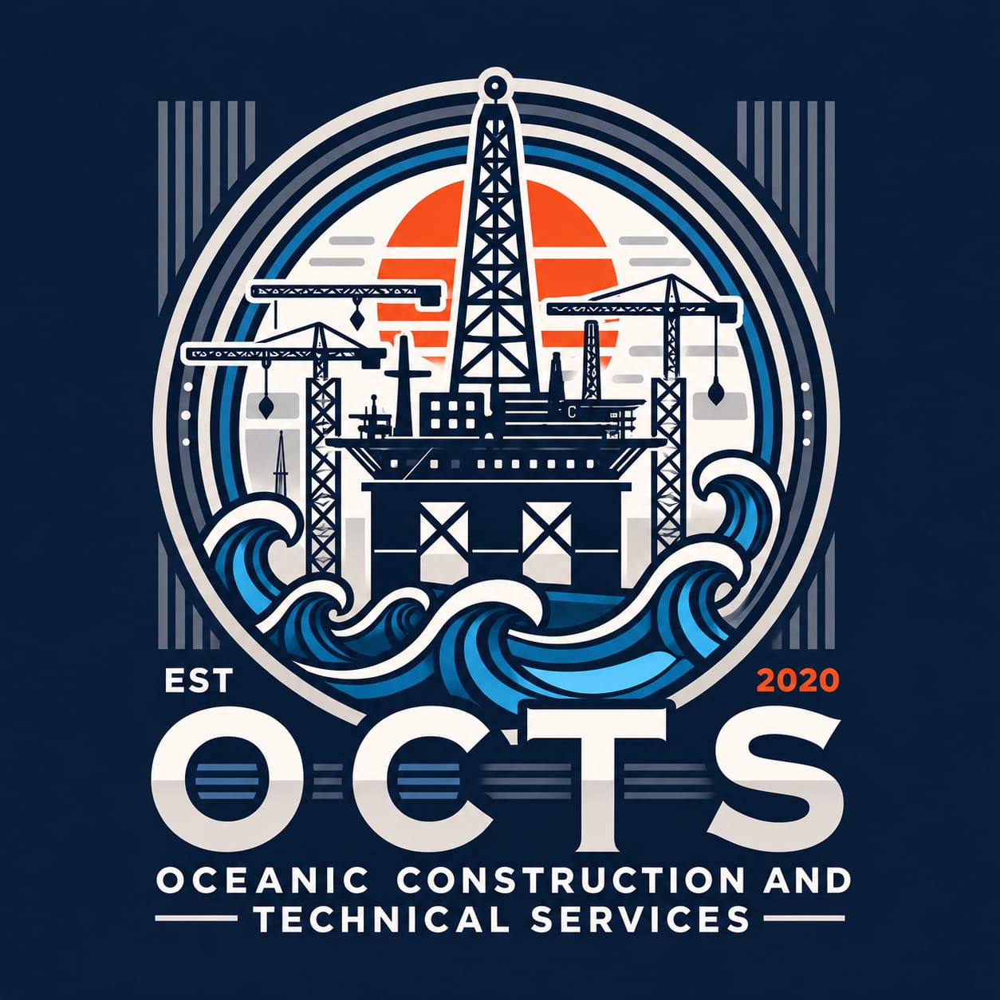

Oceanic Construction
The private, internal, fully responsive employee and certification database custom built for Oceanic Construction and Technical Services.
The OCTS Employee Management Portal is a secure, private internal web portal custom engineered for Oceanic Construction and Technical Services (OCTS). It transitions the company away from slow, error-prone manual Excel trackers and paper files into a robust digital environment.
Main business objectives solved by this system:
The system is packed with production-ready business features. Here is an overview of what has been fully tested and delivered:
Captures over 55 distinct fields including INDOS, passport, Aadhar, safety validations, medical certificates, and deployment timelines. Autogenerates incrementing serial numbers.
Limits data access. Admins can view and edit everything; Clerks can add records and edit details (but cannot view/edit salaries); Viewers get a read-only search interface.
Uploads up to 7 document formats per employee. Nginx handles fast binary streaming for files up to 20MB directly onto server volumes.
Dashboard updates dynamic counts of active/available workers and compiles designation breakdowns in clean charts, fully responsive on mobile screen views.
The system operates in isolated "containers" using Docker. This isolates the app from other software installed on your PC, ensuring it won't break if Windows updates or if other programs are installed.
To enable flawless office network access, the frontend container acts as a reverse proxy on Port 80 (standard HTTP web port):
/api are forwarded automatically to the backend on port 8000./uploads serve files directly from the local volume.Manage the app's lifetime via simple commands in Windows PowerShell.
cd C:\Users\abhay\Desktop\OCTS
docker compose up -dhttp://localhost.If you need to turn off the portal (e.g. before copying files or backing up the PC):
cd C:\Users\abhay\Desktop\OCTS
docker compose downIf you ever move the application folder to a new company computer, follow this setup sequence once:
OCTS directory to C:\Users\[YourUsername]\Desktop\OCTS.cd C:\Users\abhay\Desktop\OCTS
docker compose up -d --builddocker compose psOpen your browser and navigate to http://localhost. You will see a dark-themed login screen featuring an offshore rig background.
| Role Type | Username | Default Password | Operational Bounds |
|---|---|---|---|
| Master Admin (Anil) | admin |
Admin@OCTS#2020 |
Full control. Create/edit/delete users and employee profiles. Change and export salary records. View full audit trail. |
| Clerk | clerk1 |
Clerk@OCTS#2020 |
Data entry. Create employee records, upload documents, edit data. Cannot modify salaries or access logs/users. |
| Viewer | viewer1 |
User@OCTS#2020 |
Search and read-only. Cannot modify any records. Salary details are hidden entirely. |
When logging in as Anil, you land on the **Operations Dashboard** which includes:
The Clerk Dashboard is a streamlined control center designed for administrative assistants who register workers and manage documents.
Clerks are authorized to:
Clerks are blocked from: deleting workers, changing salaries, viewing system log records, and downloading user accounts.
Designed for managers or partners who only need read-only access. It provides search functionality and basic details for employees, but keeps financial information secure:
Only the Master Admin can manage office user accounts. This screen lists all staff accounts and allows creating, editing, and disabling them.
When an employee leaves the company, do not delete their account, as it is needed to preserve history in the audit logs. Instead, deactivate it:
Adding employees is straightforward. The form is structured into thematic tabs:
| Tab Section | Fields Captured | System Logic / Validation |
|---|---|---|
| Personal & Identity | Full Name, DOB, Designation, Father's Name, Nationality, Religion, Blood Group, INDOS. | Serial numbers increment automatically. Designation links to dashboard charts. |
| Identity Docs & Contact | Passport No, Aadhar No, Civil ID, Mobile, Alternate Mobile, Email, Permanent Address, PIN Code. | Passport, Aadhar, and Phone numbers are required and must be unique; duplicate entries will be blocked. |
| Certifications & Medical | BOSIET Expiry, H2S Expiry, STCW, PDO Induction, Medical Fitness Expiry, PCC Validity. | Expiry fields will highlight in orange or red when nearing expiration. |
| Deployment & Platform | Sign-on Date, Sign-off Date, Platform Name, Deployment Status. | Status updates stats card counters on the dashboard automatically. |
Salary values are highly sensitive. The database tracks per-day wages (₹) using role-based access control:
Attach documents to worker profiles. The system supports uploading, downloading, and viewing these 11 documents:
Storage Details: Files are stored in the host system folder backend/employee_docs/<employee_id>/. These files are not stored inside the database, keeping database backups fast and lightweight.
Admins can download the complete manpower database as an Excel spreadsheet at any time:
OCTS_MANPOWER_export.xlsx.The sheet is pre-formatted, sorted alphabetically, and contains a complete data dump of all 55+ columns, including document statuses and per-day wages.
The audit log acts as a permanent ledger of system activity. To view it, log in as Admin and click Audit Logs in the left sidebar.
Common events logged automatically:
Because the app runs inside a secure Nginx reverse proxy on Port 80, anyone in the office can connect using their phone or laptop without setting up additional servers:
ipconfig192.168.29.232).
http://192.168.29.232If Anil needs to check the portal from outside the office (e.g. at home or a client meeting), you can temporarily publish the site using a secure tunnel. Since Nginx handles everything on Port 80, you must tunnel Port 80:
1. Download Ngrok and link your auth token in PowerShell:
ngrok config add-authtoken <token>2. Open a tunnel to port 80:
ngrok http 803. Share the secure URL (e.g. https://xyz.ngrok-free.app).
Windows 10/11 has SSH built-in. Open PowerShell and run:
ssh -R 80:localhost:80 nokey@localhost.run2. The command will output a public URL (e.g. https://octs.lhr.life).
3. Copy and open this URL on any phone or PC connected to the internet.
Since the database is running in a Docker container and files are stored locally, backup is simple. Backup these two items regularly:
Run this command in PowerShell to export the database to a file:
cd C:\Users\abhay\Desktop\OCTS
docker exec -t octs-postgres_db-1 pg_dump -U octs_user octs_db > octs_backup_$(Get-Date -Format 'yyyy-MM-dd').sqlThis generates a file like octs_backup_2026-06-14.sql. Copy this file to a USB drive or cloud folder for safekeeping.
Copy the directory containing uploaded documents to a secure backup drive:
C:\Users\abhay\Desktop\OCTS\backend\employee_docs\If you need to restore the system on a new PC:
C:\Users\abhay\Desktop\OCTS and rename it to restore_backup.sql.cd C:\Users\abhay\Desktop\OCTS
cat restore_backup.sql | docker exec -i octs-postgres_db-1 psql -U octs_user -d octs_dbemployee_docs folder back to C:\Users\abhay\Desktop\OCTS\backend\employee_docs\.docker compose psdocker compose up -dhttp://192.168.29.232).Admin@OCTS#2020 password active. Change it immediately.Portal Address: http://localhost
Admin Username: admin
API Docs: http://localhost:8000/docs
DB Name: octs_db
DB User: octs_user
DB Password: octs_password_123
DB Port: 5432
Project Root: C:\Users\abhay\Desktop\OCTS
Docs Folder: C:\Users\abhay\Desktop\OCTS\backend\employee_docs\